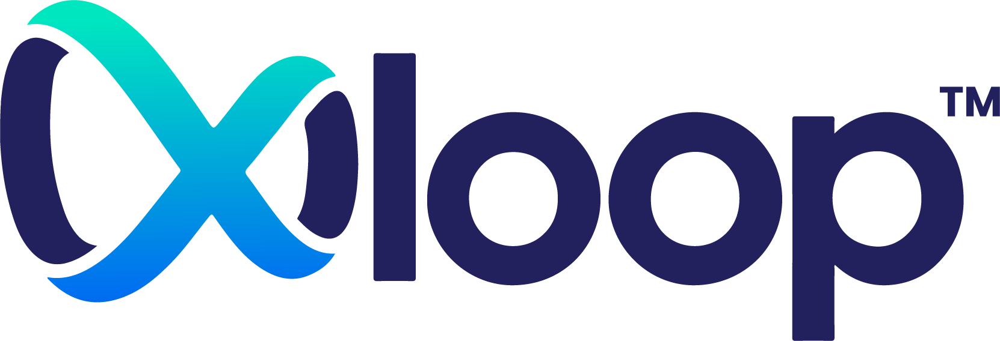

About xLoopxLoop Digital is a data and AI consulting and engineering company. Since 2022 we have helped banks, asset managers, retailers, healthcare providers and logistics operators move their data to modern platforms, put AI into production and secure the systems they depend on. Our largest delivery center is in Karachi, where our own AI products, including xVision, are built and supported.
| Legal name | xLoop Digital Services Private Ltd |
| Registration | Private limited company, registered in Pakistan |
| Year founded | 2022 |
| Registered office | 1st Floor, Marine Tower, Block 4 Clifton, Karachi, Pakistan |
| Offices | San Mateo, California (HQ) · Dubai, IFZA (Regional HQ) · Doha, QFC (Regional HQ) · Karachi (Delivery Center) |
| Business lines | xTend · xLab · xSecurity · xCelerate |
| Industries | Banking and financial services · Retail · Real estate · Healthcare · Logistics · Travel |
| Shareholders | Backed by established Pakistani business groups: Gul Ahmed, ACT Group and Akhtar Group |
| Web · Email | xloopdigital.com · info@xloopdigital.com |
We started as a data and engineering company and moved early into applied AI. Each step built on the last: training, then services, then our own products, then an AI native way of working.
A data, cloud and engineering company with its delivery center in Karachi.
An AI training partnership with Emeritus, and employment based bootcamps for banks and national energy companies.
Engineering, products, security and training organized as xTend, xLab, xSecurity and xCelerate.
xLab launches xVision for video analytics, alongside AI assistants for ordering, HR and investor support.
Engineers start building with AI coding assistants, with every change reviewed and tested by an engineer.
AI native delivery fully in place, an AI security practice with certified ISO 42001 and ISO 27001 Lead Auditors, and xVision working with leading Pakistani banks.
Data, cloud, AI, security and training sit under one roof, so a client can take a solution from assessment to production and keep it secure with one accountable partner.
Data platforms on Azure, AWS, Snowflake and Databricks, cloud migration, legacy modernization, AI agents and application engineering, plus dedicated engineering teams for long term programs.
Products we build, own and support: xVision for AI video analytics on existing CCTV, xServe for AI ordering, and App Pilot assistants for HR and investor support.
Penetration testing, application security, IT and OT compliance audits, AI red teaming and AI security audits, led by certified ISO 27001 and ISO 42001 Lead Auditors.
Employment based bootcamps in AI, data science and full stack engineering, delivered for banks and national energy companies, with Emeritus as our training partner.
Queues, footfall, staffing, equipment status and security events, detected live on existing cameras.
Object detection and tracking with convolutional neural networks and YOLO models, tuned to each site.
Analytics on site, in the cloud or both, sized to the client's network and data residency needs.
Live control panels, multi KPI dashboards and alerts into the systems teams already use.
Custom models that check items for defects, and read invoices, forms and documents.
Access control, audit logs and security testing of the AI and the platform around it.
Branch cameras record every hour of the day, but people can only review a fraction of it. xVision analyzes every feed continuously, flags service and security issues as they happen, and shows how every branch is performing on one dashboard, using the cameras already installed.
Measures queue length and how long customers wait, and alerts branch staff when lines build up.
Counts footfall and shows busy hours, so staffing matches demand at each branch.
Shows whether tellers and service desks are staffed while customers are waiting.
Spots ATMs and equipment that are down or out of service, so they get fixed sooner.
Flags unusual behavior and unauthorized access for the security team to review.
Picks up maintenance and housekeeping issues before customers notice them.
Connects to existing CCTV feeds; most modern IP cameras work through standard streams.
Computer vision models analyze each feed for the service and security events the bank selects.
Events go to a live control panel for branch, regional and head office teams.
A multi KPI dashboard ranks branches on wait times, traffic, staffing and upkeep.
Service quality in a branch comes down to how long customers wait, whether counters are staffed, whether ATMs work and whether the branch is kept up. xVision measures all four, at every branch, every day, and gives head office one view of the whole network instead of periodic spot checks.
xVision works with leading Pakistani banks on their own branch CCTV, across branch service and security. It connects to the cameras already installed, so a bank sees results from its own branches from the start.
| Without xVision | With xVision |
|---|---|
| Footage reviewed in occasional manual spot checks | Every connected camera analyzed continuously |
| Long waits and broken ATMs found through complaints | Alerts to branch and regional teams as events happen |
| Security events found after the fact | Suspicious activity flagged for review in real time |
| No consistent view across branches | Wait times, staffing and upkeep compared branch by branch |
| Cameras | Existing CCTV; most modern IP cameras |
| Technology | CNN and YOLO object detection |
| Deployment | Edge · on premises · cloud · hybrid |
| Outputs | Live control panel · alerts · multi KPI dashboard |
| Sectors | Banking · retail · healthcare · multi site networks |
A system that watches branch video has to be accurate, private and secure before it is fast. That shapes how we work on every computer vision project.
Camera positions, resolution, lighting and network capacity are reviewed at representative sites, and the KPIs and alert rules are agreed with the client before anything goes live.
Every rollout starts with pilot sites. Detection is tuned to each layout and results are measured against the agreed KPIs before more sites are added.
Sites are added region by region, with dashboards and alerts set up for site, regional and head office teams at each stage.
No identification by default, data kept to what the use case needs, and retention and access set by the client.
Our engineers build with AI coding assistants, and an engineer reviews and tests every change before it ships.
Our security practice, which includes certified ISO 27001 and ISO 42001 Lead Auditors, tests the platform and the AI around it. Its work includes VAPT across 200+ domains, mobile banking security guided to PCI DSS and State Bank of Pakistan requirements, and an IT and OT audit for a 30 MW wind power producer.
After go live, our Karachi team stays with the system: model tuning, health monitoring of cameras and feeds, and regular service reviews with the client.
Banking and financial services is a core sector for xLoop. Client names are withheld under our confidentiality commitments.
AI video analytics on the banks' own branch CCTV, covering queues, customer traffic, staffing, ATM status and security.
A retrieval augmented assistant with custom LLM orchestration and multi language support, giving every employee instant answers from bank policy.
An LLM and RAG assistant that answers investor queries from the firm's own fund documents, including 40 page fund reports.
Manual spreadsheet reconciliation replaced with automated ingestion and matching, rule based NAV tagging, exception reporting, role based access and a management dashboard.
Insecure APIs and data leakage found and fixed, with SAST and DAST built into the delivery pipeline.
Cloud native and mobile application development training for the bank's own technology professionals.
Our leadership brings decades of experience building technology companies, banking systems and secure cloud platforms in Pakistan, and stays directly involved in client work.
More than two decades building technology companies in Pakistan. Mir cofounded Inbox Business Technologies and, as CEO, grew it into one of Pakistan's largest technology companies, with more than 3,000 employees, moving it from systems integration to managed cloud, security and operations services. He served on the Prime Minister's Task Force on IT and Telecom from 2018 to 2021, and founded Beythak, a fintech that uses machine learning credit scoring to help banks lend to farmers.
Previously led AI Solutions and Consulting at xLoop, and earlier the EMEA region, designing solutions in generative AI, computer vision and data science. Before xLoop he led enterprise cloud and AI consulting across several regions, and worked with Fortune 500 clients in the US, South Africa and Canada.
Leads xLoop's commercial strategy, after heading sales and business development for the Middle East and Africa. Nine years in technology growth across Pakistan, Turkey and the US market, including cofounding an AI customer intelligence platform.
More than 20 years in IT and risk consulting for banks and enterprises. He worked on the State Bank of Pakistan's Real Time Gross Settlement payment system, and spent 12 years at Inbox Business Technologies leading ERP consulting and solution sales. Oracle Financial Services Application certified.
Oversees finance, corporate governance and compliance across xLoop's four international entities, with consolidated reporting and budgeting. Previously Director of Finance and HR for a technology group with entities in the US and Pakistan, Group CFO of a diversified business group, VP Finance at a NASDAQ listed healthcare IT company, and Group CFO and GM Pakistan Operations at Arthur Lawrence.
xLoop is backed by established Pakistani business groups: Gul Ahmed, ACT Group and Akhtar Group. Their backing gives clients a partner with the stability to support long programs.
Leaders who built one of Pakistan's largest technology companies, with more than 20 years of delivery for banks and enterprises.
AI, automation and security work for commercial banks, asset managers and banking platforms, guided to State Bank requirements.
Banking, retail, real estate, healthcare, logistics and travel, for clients in 8 countries.
Detection models, edge and hybrid deployment, and live dashboards, built and supported by our own engineers in Karachi.
Cloud architects across AWS, Azure and Google Cloud, and certified ISO 27001 and ISO 42001 Lead Auditors.
No identification by default, on site processing, and a security practice that tests what we build.
Data and AI consulting and engineering, from the team behind xVision.